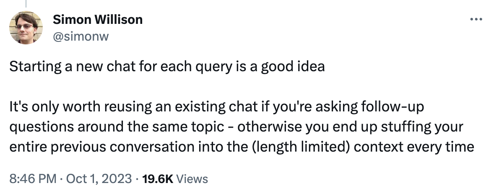

Prompt engineering
Let’s start from the top again. Instead of just asking for a headline for our story and then spending our time adjusting it, we’ll provide plenty of guidance about what we’re looking for up front.
Figuring out what to ask when you’re looking for a response is called prompt engineering, and it’s often the difference between a successful request and a failed one!
OpenAI, the organization behind ChatGPT, has an entire guide on prompt engineering, full of concrete suggestions. Under “Write clear instructions,” they provide the following tips:
- Include details in your query to get more relevant answers
- Ask the model to adopt a persona
- Use delimiters to clearly indicate distinct parts of the input
- Specify the steps required to complete a task
- Provide examples
- Specify the desired length of the output
There are a ton of guides out there to help with your prompting. If you have a little more time I suggest taking a look at Ethan Mollick’s prompting guide, which is a little more conceptual.
When you start to read about how to interact with AI tools like ChatGPT, you start to see the term language model or large language model again and again. That’s just the “brains” of the chatbot, the software that allows it to come up with responses to your requests. We’ll talk more about the specifics in a later chapter!
Exercise
Let’s see if we can get a single prompt that will generate a great headline right out of the gate!
Combine the suggestions above with the directions you nudged the headline in the last exercise to craft a winning request.
You are an editor at the New York Times. Write a headline for the article below. The tone should be informed but approachable. Limit the headline to 70 characters.
ARTICLE:
(paste the story in)
Click here to use my article 🔮
Prompt engineering is a lot like magic: special words you chant to an unknown being that, without rhyme or reason, might cause something amazing to spill forth. It definitely takes practice to get the hang of getting good responses!
Before you get too deep into tweaking the prompt towards a “best” result, you might want to read the next section…
The danger of conversation
One important thing to note is that while context is usually a great thing for ChatGPT to have, a conversation can actually ruin a prompt!
ChatGPT and other AI tools take your entire conversation into account when generating their responses, which can lead to unexpected results:
If you’ve already prompted for a science story about snails and slugs, your headline request for an article about stock prices might be subtlely affected! The AI might cite facts or concepts from the earlier story, or “feel” the unnecessary need to address the middle ground between snails and stocks.
It gets even worse if you’re asking for jokes, poems or dating advice, then pivoting to headline suggestions. Keep to new conversations as much as possible to prevent content pollution and cross-pollination between prompts.
Even computer-y folks miss out on this! A memorable moment was this tweet where someone is kinda dunking on their mom for not using ChatGPT “correctly:”
…and king of LLMs Simon Willison shows up with the facts:

Good work, mom! So now let me introduce you to a very useful button:
The help of suggestions
When you ask an AI tool to do something without providing any examples, this is called a “zero shot” approach. You’re fully relying on the language model’s understanding of what you’re asking for.
Imagine you had a junior editor you were guiding along, though: you’d probably show them some examples of headlines that worked and headlines that didn’t. You can do the same thing with AI with what is called few-shot prompting. This is what OpenAI means in their guide where they mention “Provide examples” (see above).
You are an editor at the New York Times. Write a headline for the story below. The tone should be informed but approachable. Limit the headline to 70 characters. Don’t use colons or subheads. Move prepositional phrases to the start of the headline.
Good example: On Twitter, Sifting Through Falsehoods in Critical Times
Bad example: Meet the 4 Dem-picked Colorado justices who kicked ex-prez off the ballot
ARTICLE:
(paste the story in)
Click here to use my article 🔮
When you get to a prompt you think does a pretty good job, save it. We’ll make it even better in the next step!
Reflection
Now it’s a bit shorter and the tone has shifted a little bit:
Near Bronx Day Care, Open Drug Market Persists Amid Fentanyl Crisis
I think it’s better, but again: it’s difficult to be critical of something that comes out like magic! But the sharper the eye you can take to it, the more suggestions we can provide in the prompt.
As we had the conversation about our headlines in the last step, you probably noticed a bit of sameness about the headlines. They all seemed to maybe have a similar tone, or a similar angle, or something that’s just… not as varied as when you’d ask a person to generate a handful of headlines.
One downside of having a fine-tuned prompt ready to go is you might just take the first response as the gospel truth: no need to wait for something better, we’ve given it as much guidance as we have! But by only seeing one example, we might not notice the preferences or biases or assumptions that the tool is working with.
Our next step will fix that right up!